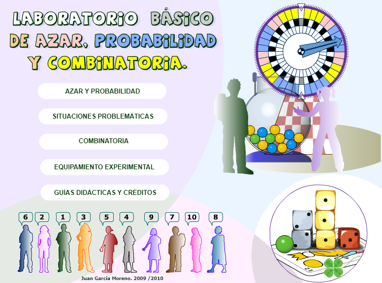
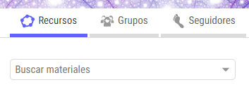
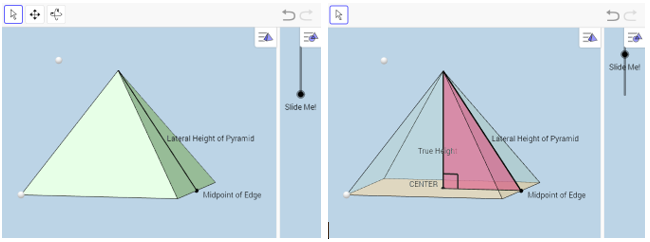

Manipulables virtuales
Didactmatic Primaria (e Infantil... y Secundaria)
En palabras de su autor Juan García Moreno, la web Didactmatic Primaria está dedicada a la investigación y desarrollo de contenidos educativos digitales multimedia para la enseñanza-aprendizaje de las matemáticas (infantil-primaria y atención a la diversidad en eso) y al análisis y valoración de su interés didáctico. Por una enseñanza-aprendizaje de la matemática que integre las TIC con fundamento didáctico, basada en el aprendizaje por descubrimiento, la atención a la diversidad, el análisis crítico del currículo, el desarrollo de competencias y el fomento de la creatividad.
Por mucho que ponga «primaria» en el nombre de la web, en Didactmatic Primaria encontraremos contenido digital desde la etapa de infantil hasta la secundaria. El propio autor menciona que para atención a la diversidad en ESO. Sin embargo, desde aquí creemos que es muy modesto. La forma en la que aborda la resolución de problemas o, sin ir más lejos, el magnífico laboratorio de azar y probabilidad, son válidos para secundaria tranquilamente.

GeogebraTube
Geogebra facilita el que cada usuario suba a la web las construcciones o libros que vaya haciendo, de forma que, además, se compartan con la comunidad. De ahí que una buena fuente de recursos interactivos sea la propia web de Geogebra (https://www.geogebra.org/):

Por ejemplo, consideremos el siguiente manipulable disponible en los materiales de Tim Brzezinski (https://www.geogebra.org/m/V9cAn76T). Está diseñado para plantear situaciones acerca de la superficie lateral de una pirámide de base cuadrada, o de su volumen. Si conocemos como dato la altura de uno de los triángulos que forman las caras de la pirámide y el lado de la base, sí, es posible conocer la altura. Pero muchas veces, nuestros alumnos no son capaces de ver a bote pronto el triángulo rectángulo que permite aplicar Pitágoras para ello.

Hacer nuestros propios manipulables
Tanto con GeoGebra como con Scratch es posible hacer manipulables o pequeños applets interactivos sobre los que proponer tareas. Además, existen (y existirán) multitud de aplicaciones y plataformas sobre las que poder implementar nuestras ideas. Todo depende de lo que nos interese en cada momento.
Para saber más (referencias)
DidactmaticPrimaria. Estupenda web de Juan García Moreno que nunca nos cansaremos de recomendar.
Libro de Geogebra, con actividades interactivas: Competencias matemáticas 1° ESO, creado por Álvaro Fernández Buendía y Pablo J. Triviño Rodríguez.
Materiales de Tim Brzezinski en Geogebra. https://www.geogebra.org/tbrzezinski. Es un usuario muy activo, pero hay muchísimos más. Solo hay que buscar un poquito.
Materiales del proyecto Gauss (en procomún). Recientemente, todo lo realizado en el proyecto Gauss ha sido actualizado a HTML5, por lo que se pueden utilizar sin problemas.
Descartes. El Proyecto Descartes fue promovido y financiado por el Ministerio de Educación de España. Actualmente (octubre de 2017) se están migrando los contenidos para evitar problemas de visualización.